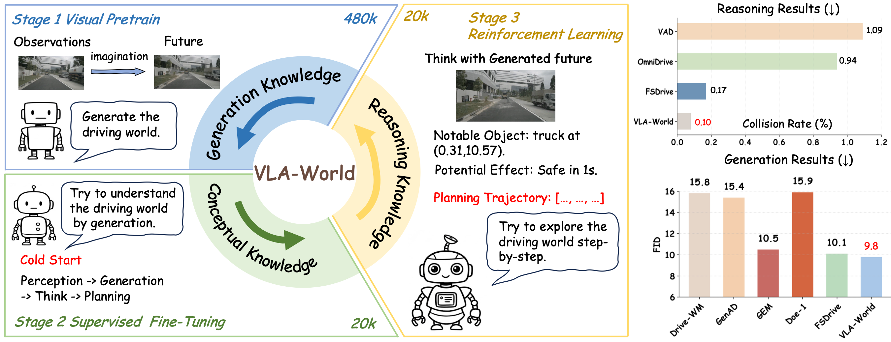
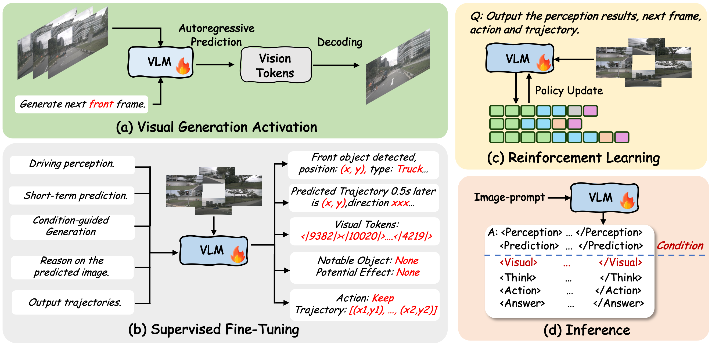
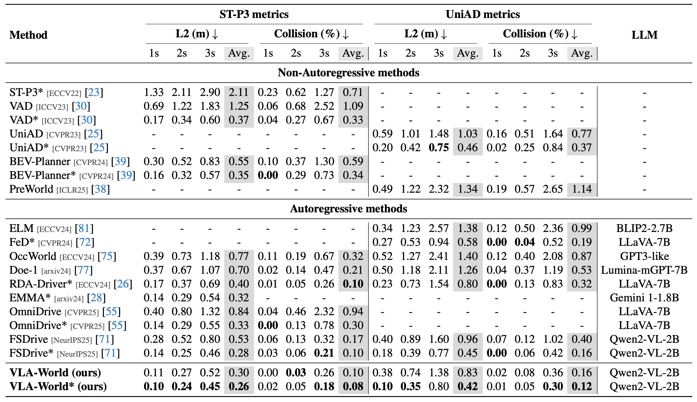

Learning Vision-Language-Action World Models for Autonomous Driving
Abstract
Vision-Language-Action (VLA) models have recently achieved notable progress in end-to-end autonomous driving by integrating perception, reasoning, and control within a unified multimodal framework. However, they often lack explicit modeling of temporal dynamics and global world consistency, which limits their foresight and safety. In contrast, world models can simulate plausible future scenes but generally struggle to reason about or evaluate the predictions they generate. In this work, we present VLA-World, a simple yet effective VLA world model that unifies predictive imagination with reflective reasoning to improve driving foresight. VLA-World first uses an action-derived trajectory to guide the generation of the next-frame image, capturing rich spatial and temporal cues that describe how the environment evolves. The model then reasons over this self-generated future frame to refine the predicted trajectory, achieving higher performance and better interpretability. To support this pipeline, we curate nuScenes-GR-20K, a generative reasoning dataset derived from nuScenes, and employ a three-stage training strategy that includes pretraining, supervised fine-tuning, and reinforcement learning. Extensive experiments demonstrate that VLA-World consistently surpasses state-of-the-art VLA and world-model baselines on both planning and future-generation benchmarks.
Introduction

Visual overview of VLA-World. The model learns through three progressive stages. We first activate visual generation by predicting future frames from multi-view inputs to learn generation knowledge. Then, we fine-tune the model to link perception, future generation, and planning to learn driving conceptual knowledge. Finally, we use reinforcement learning to refine decisions through interaction with generated futures to explore reasoning knowledge. The results on the right show that VLA-World achieves both the lowest collision rate and FID score, highlighting its strengths in future generation and driving-oriented reasoning.
Method

The illustration of the three-stage training and inference pipeline of VLA-World. Our training pipeline consists of three key stages: (a) visual pretrain to activate generation capability, (b) supervised fine-tuning to seed conceptual knowledge to the model, and (c) reinforcement learning with GRPO to explore the upper bound of intelligence.
Results

End-to-end trajectory planning results on nuScenes. We evaluate L2 error and collision rate following the respective protocols of ST-P3 and UniAD. The * indicates the use of additional ego-state information. Results for VAD and UniAD are taken from BEV-Planner.
BibTeX
@article{wang2026vla,
title={Learning Vision-Language-Action World Models for Autonomous Driving},
author={Guoqing Wang and Pin Tang and Xiangxuan Ren and Guodongfang Zhao and Bailan Feng and Chao Ma},
journal={CVPR Findings},
year={2026},
}